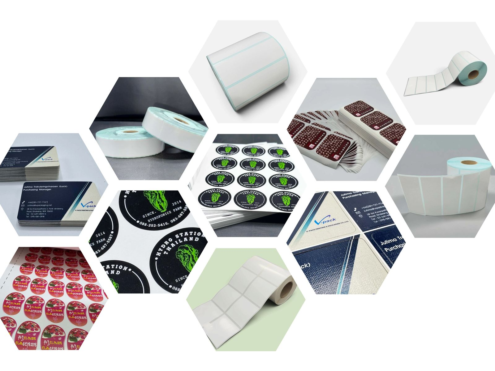
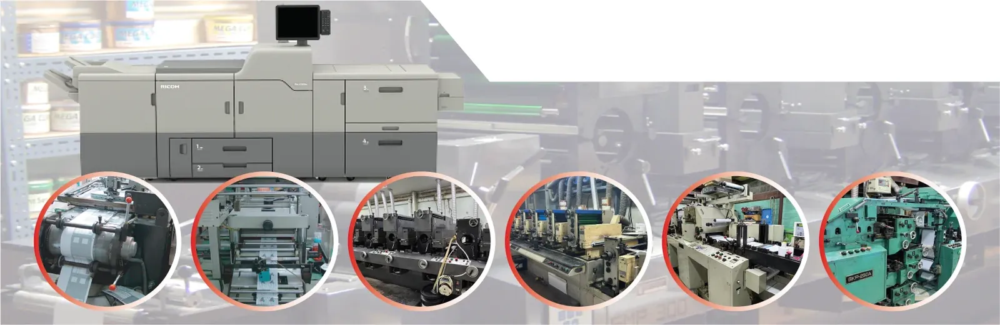

ครบจบในโรงพิมพ์เดียว ตั้งแต่พิมพ์ ไดคัท ถึงปั๊มฟอยล์
บริษัท วี แพค การพิมพ์และบรรจุภัณฑ์ จำกัด (V-PACK Printing & Packaging Co., Ltd.) จดทะเบียนก่อตั้งเมื่อวันที่ 3 มีนาคม พ.ศ. 2546 โดยขยายกิจการมาจาก บริษัท วี พี บรรจุภัณฑ์ จำกัด เพื่อรับจ้างผลิตสิ่งพิมพ์และบรรจุภัณฑ์อย่างครบวงจร ปัจจุบันมีทีมงานกว่า 20 คน
เรานำเทคโนโลยี เครื่องจักร และระบบงานพิมพ์ดิจิทัลมาใช้ในการผลิตอย่างต่อเนื่อง เพื่อให้บริการรวดเร็ว ยืดหยุ่น และตอบโจทย์ลูกค้าทุกกลุ่มอุตสาหกรรม

บริษัท วี แพค การพิมพ์และบรรจุภัณฑ์ จำกัด จดทะเบียนก่อตั้งเมื่อวันที่ 3 มีนาคม พ.ศ. 2546 โดยขยายกิจการมาจาก บริษัท วี พี บรรจุภัณฑ์ จำกัด ด้วยเป้าหมายที่จะรับจ้างผลิตสิ่งพิมพ์และบรรจุภัณฑ์อย่างครบวงจร ด้วยทุนจดทะเบียนเริ่มแรก 10,000,000 บาท
ตลอดกว่า 20 ปี เราพัฒนาเครื่องจักร ระบบงานพิมพ์ และมาตรฐานการผลิตมาอย่างต่อเนื่อง และเมื่อวันที่ 13 กรกฎาคม พ.ศ. 2553 บริษัทฯ ได้เพิ่มทุนจดทะเบียนเป็น 15,000,000 บาท เพื่อนำมาลงทุนซื้อเครื่องจักรรองรับปริมาณงานที่เพิ่มขึ้น
วันนี้เราพร้อมเป็นคู่ค้าที่คุณไว้วางใจได้ ตอบรับความต้องการของลูกค้าด้วยความรวดเร็ว พร้อมกับคุณภาพ
ตรวจคุณภาพทุกล็อตก่อนส่งมอบ ด้วยเครื่องจักรที่พิมพ์ได้แม่นยำ ลูกค้านำไปใช้หรือจำหน่ายต่อได้อย่างมั่นใจ
ประสบการณ์ยาวนานและการบริหารต้นทุนที่ดี รองรับทั้งงานจำนวนน้อยและล็อตใหญ่
ให้คำปรึกษา รับไฟล์ artwork จากลูกค้า ให้ยืนยันแบบก่อนผลิต ควบคุมการผลิต และจัดส่งอย่างรวดเร็ว
ผลิตทั้งแบบม้วนและแบบแผ่น
สติกเกอร์แบบต่อเนื่อง / เจาะรูคอม, Blank Label (ปั๊มเปล่า), Barcode Label, Running Number, Security Label, Hologram, Removable Label (ลอกออกได้), ฉลากเว้นกาว (งานฆ่ากาว), Hang Tag, Digital Printing
เคลือบ UV Varnish, เคลือบ OPP, เคลือบด้าน, เคลือบเงา, Spot UV, ปั๊มนูน / ปั๊มลึก / ปั๊มเส้นพับ, Hot Foil Stamping, ซิลค์สกรีน, ไดคัท 50% และ 100%, Ribbon Film
รับปั๊มฟอยล์ ปั๊มเส้นพับ ปั๊มไดคัท รวมถึงงานพิมพ์ที่ส่งมาจากที่อื่น

เครื่องพิมพ์ Letterpress 6 สี เครื่องพิมพ์ดิจิทัล และเครื่องไดคัท ในโรงพิมพ์เดียว